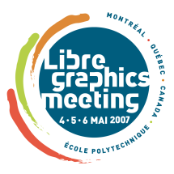

Libre Graphics Meeting 2007Montréal, Québec, Canada 4-6 May – École Polytechnique de Montréal
The Conference
Projects
While LGM 2 has passed, it was by all accounts a tremendous success and plans are already underway for LGM 3 to be held tentatively on the European continent. Meanwhile, for those who did not attend, we have thanks to Ralph Giles, Mirco Müller and Xiph.org, a fairly complete set of video or audio recodings of each major talk. These videos and audio are streamed in the excellent open source Ogg format.

Philosophy
LGM is all about participation. Artists and developers, feel free to bring your laptops and show us what you can (and can't yet) do. Organise a BOF about your favourite project or feature. We're aiming for a bazaar.
Libre Graphics Meeting is free to attend, and open to all.
LGM brings together developers and users of the best of free software graphics applications - Blender, GIMP, Inkscape, Krita, Scribus, and more.
LGM 2 Conference venue provided by École Polytechnique de Montréal
Conference Website hosted by Anduin.net